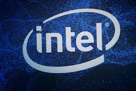
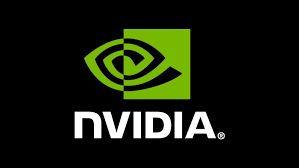

Tras el exitoso e increíble lanzamiento de Ryzen™ de AMD, los consumidores están encantados con el rendimiento que ofrecen los procesadores Ryzen. Con muchos avances tecnológicos en materia de procesamiento, Ryzen ofrece un rendimiento sin igual en una gran cantidad de tareas. Si bien los procesadores Ryzen™ 5 y Ryzen™ 7 apuntan a diferentes mercados de consumidores, ambos ofrecen una potencia increíble en juegos, creación de contenido multimedia y tareas en estaciones de trabajo (por ejemplo, edición fotográfica, programas de diseño asistido por computadora [o programas CAD, según sus siglas en inglés], etc.). A medida que los clientes exigen más de sus sistemas, buscan un procesador que les ofrezca la libertad para realizar varias tareas, por lo general, al mismo tiempo.
ntel Corporation es el mayor fabricante de circuitos integrados del mundo4 según su cifra de negocio anual.5 La compañía estadounidense es la creadora de la serie de procesadores x86, los procesadores más comúnmente encontrados en la mayoría de las computadoras personales. Intel fue fundada el 18 de julio de 1968 como Integrated Electronics Corporation (aunque un error común es el de que "Intel" viene de la palabra intelligence) por los pioneros en semiconductores Robert Noyce y Gordon Moore, y muchas veces asociados con la dirección ejecutiva y la visión de Andrew Grove.
Nvidia Corporation es una empresa multinacional especializada en el desarrollo de unidades de procesamiento gráfico y tecnologías de circuitos integrados para estaciones de trabajo, ordenadores personales y dispositivos móviles